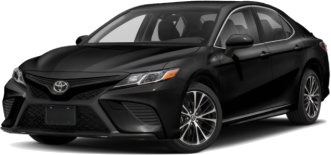

2018 Toyota Camry

Mileage125,710
Service Date1/13/2026
Services Performed
- Lubricate and check chassis. Change oil and oil filter. Check air filter and breather filter. Check all fluid levels and tire pressures.
- Oil waste fee
- Charging system check, including battery, regulator and voltage output
- Battery testing, including hydrometer and load test
★★★★★
ALLISON T. gave our service a 5 star review on